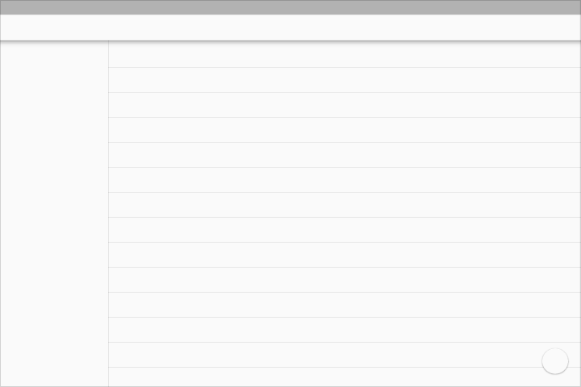

Whiteframes


浮动内容区域
在移动设备上配合多个工具栏和背景一起使用
扩展的应用栏和右侧栏

移动设备上的左侧栏和流式布局

列表

全屏背景图片
显示浮动的搜索栏和卡片式的搜索结果

本节将指导您您设计横跨多个平台的应用。
注意: 如何在 z 轴上合理的分布元素的详细指导，请参考 环境 和 3维世界的物体 。
不同的应用设计可以满足用户不同的需求，例如:
所以您应用提供的功能真正决定了其层次结构。
请仔细斟酌您应用的首屏界面，用户打开应用后第一眼看到的就是这个屏幕。所以无论用户是第一次启动，还是经常启动您的应用，都请给予绝佳的体验。
设计首屏界面时，请先自问: “用户打开我的应用主要是为了干什么？”
突出内容。很多应用主要用于显示内容，所以不要把首屏设计成仅仅提供导航功能，而是将重要的内容显示出来，这样用户就可以立即开始使用。仔细设计布局和视觉元素，更好的展现数据和内容。
锚定导航和操作。就像其它的工具栏一样，应用栏可以用于放置各种操作。应用栏始终处于应用屏幕顶部，所以很适合放置导航控件，例如标签切换和导航抽屉开关。如果应用的内容可以搜索，您还可以将搜索按钮放置于应用栏，为用户进入较深的层级提供捷径。
引导用户使用。如果您的应用现实很多内容或者有很多功能，请考虑如何引导用户的注意力，突出您应用的重要功能。在内容区高亮跳转链接，使用浮动按钮突出功能，弱化不经常使用的操作线路。
顶层视图向用户展示应用的主要功能，有的应用功能单一，有的应用则比较复杂，需要有效地在不同功能之间导航。
在单一视图上整合导航。您可以将所有导航和部分内容放置在同一个视图中，使用户一目了然。不过如果您的应用有很多导航路径，过于复杂的选择会迷惑用户，这时需要使用合适的导航路径引导用户。
何时整合上下文和导航:
使用标签在少量的重要视图之间导航。如果您的应用只有少量功能区域，且导航层级较浅，那么标签可以更好的展示出各种功能，并且只需要点击和滑动就能快速导航。不过标签需要占用大量的空间，且仅仅适合较少的功能切换导航。
何时使用标签:
使用左侧导航抽屉管理更加复杂的应用结构。左侧的导航抽屉可以显示大量的导航目的地。如果您的应用有某个天然的“主屏幕”，那么很适合使用导航抽屉来展示其余位置。如果用户需要在应用的较深层级直接切换功能，导航抽屉也很适合。不过导航抽屉隐藏了许多功能，所以用户探索您的应用需要一段时间。
何时使用导航抽屉:
不过无论您选择何种导航结构，整合于内容之中的导航仍然是很重要的，例如在音乐视图中提供歌手的链接，用于显示该歌手的其它歌曲，或者是在最近操作中提供显示所有历史记录的功能，再或者帖子上提供跳转到发布者个人资料的链接。这些功能使用户在相关的数据之间跳转变得更加容易。
这个设计包括了固定的应用栏和浮动按钮。底部还可以根据需要放置一些功能。边上的导航抽屉用于放置其它的功能。

这个设计包括了固定的应用栏和浮动按钮，这里的应用栏包含了移动设备的设计中的底部栏。如果需要，也可以在应用底部添加底部栏。边上的导航抽屉用于放置其它的功能。右侧栏可以是浮动的，也可以是固定的。

这个设计包括了固定的应用栏和浮动按钮，这里的应用栏包含了移动和平板设备的设计中的底部栏，应用栏还可以放置窗口控件。边上的导航抽屉用于放置其它的功能，可以是浮动的，也可以是固定的。边栏可以包含自己的工具栏，色调和操作栏。
横向或者纵向的分割。

请不要将界面分割成太多的小块，甚至构成 L 型的布局。请在需要时使用留白来分割功能区域。


使用卡片和浮动按钮切割边界。

可以使用卡片来集合分组内容，相比使用留白或者分割线，能够提供更好的体验。


工具栏可以体现很多功能。
全屏宽度、默认高度的应用栏
全屏宽度、扩展高度的应用栏

分栏宽度的工具栏，提供了多层级的功能

自适应的工具栏和卡片栏

浮动工具栏

浮动功能面板

底部工具栏，可以随着键盘弹起而升高位置
底部栏的抽屉效果
应用栏，以前在 Android 系统中称之为操作栏，用于放置商标、导航按钮、搜索和功能按钮。
如果您的应用有边栏，那么边栏的开关按钮放置在应用栏的左侧，该按钮在需要时也可以变成返回按钮。应用栏的标题对应于当前页面内容。
应用栏右侧的按钮则是一些操作，例如菜单按钮可以打开更多操作菜单，显示更多的功能，包括帮助、设置和反馈。


Light

Dark
彩色的

透明的
默认高度:
移动设备横向: 48dp
移动设备纵向: 56dp
平板/桌面: 64dp
对于扩展应用栏，高度可以是默认高度加上内容高度。


菜单弹出后，应该覆盖在应用栏之上，而不是应用栏的扩展。


在 Android 上，状态栏包括了通知图标和系统图标。在 Chrome 上，窗口栏则包括了常见的窗口控件：最小化、全屏和关闭按钮。Chrome app 中，窗口栏可以和应用栏合并，在应用栏中显示窗口控件。

Android 状态栏

Chrome 窗口栏
尺寸:
Android 状态栏高度: 24dp
Chrome 窗口栏高度: 32dp

在应用栏之上的 Android 状态栏

在应用栏之上的 Chrome 窗口栏

和应用栏集成的 Chrome 窗口控件
默认情况下，状态栏和窗口栏选择比应用栏稍微深一些的颜色。不过也可以从布局中选择另一种颜色，或者设置成透明的。

从内容中选择一种颜色
透明的状态栏，20% Black #000000
深色状态栏

比应用栏颜色稍深的状态栏
Android 系统提供了自带的导航栏，包括: 返回、主屏幕和最近的应用按钮。为了兼容 Android 2.3 的应用，还会显示菜单按钮。
Metrics:
Height: 48dp
Dark
Light
默认情况下，导航栏选择比应用栏稍微深一些的颜色。不过也可以从布局中选择另一种颜色，或者设置成透明的。

透明的

复杂背景之上的透明导航栏

透明的

渐变背景之上的透明导航栏
从布局中选择一种颜色。
不要在杂乱背景之上使用透明导航栏。

参考设备颜色

与设备颜色形成对比
Shelf 用于放置启动器、正在运行的应用和系统设置图标。
尺寸:
高度: 56dp

导航抽屉滑入后覆盖在主内容之上，或者在宽屏幕上固定于侧边。
尺寸
移动设备: 宽度 = 屏幕宽度 - 应用栏高度
例如:
桌面: 左侧边栏最大宽度为 400dp。右侧边栏的宽度则根据内容需要而调整。
移动设备


桌面的左侧导航

桌面的右侧栏
在移动设备上配合多个工具栏和背景一起使用
显示浮动的搜索栏和卡片式的搜索结果
Sun Junwen | Casper Zhang.